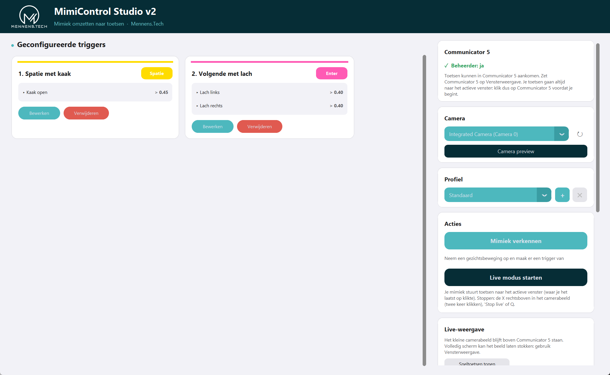
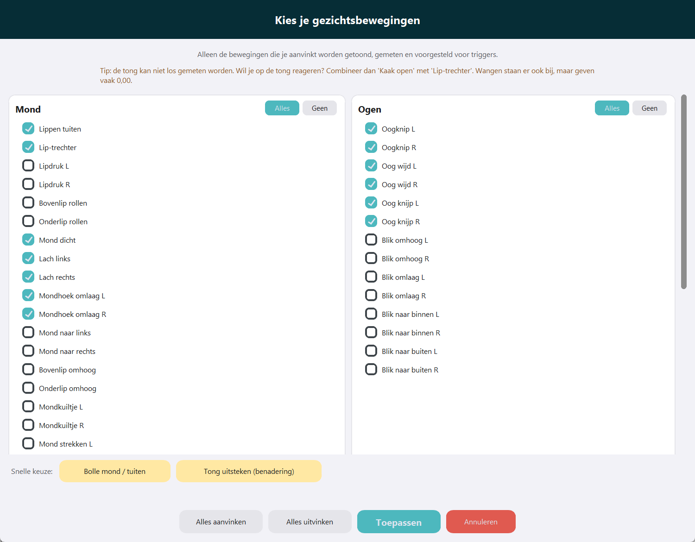
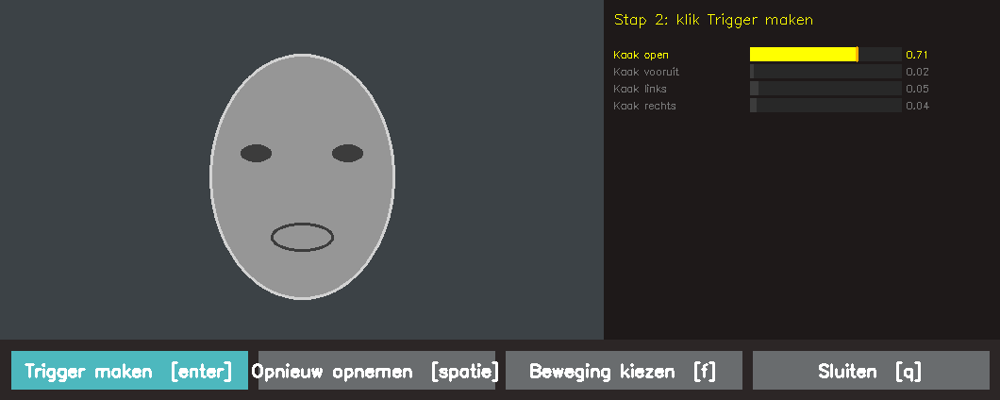
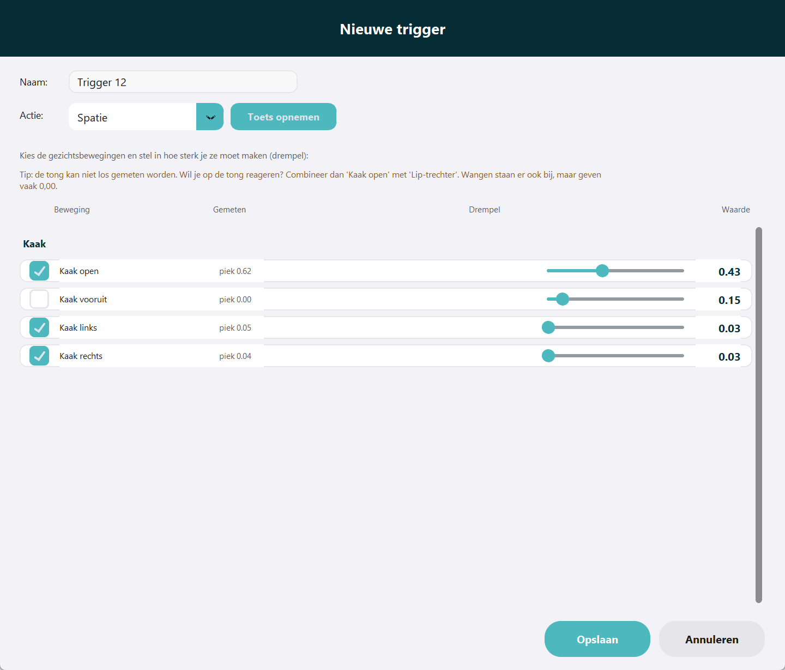
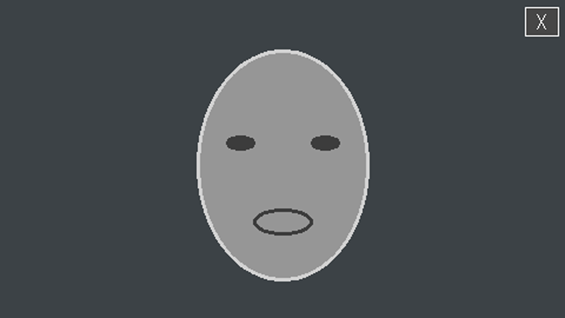
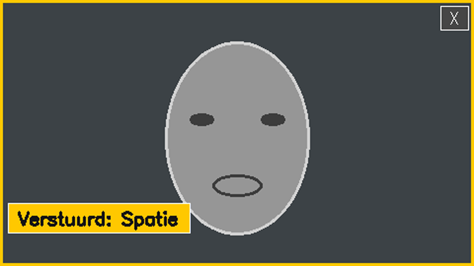
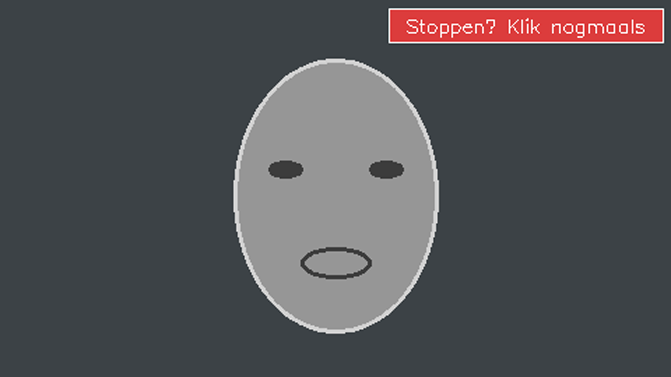

MimiControl Studio
Met je gezicht toetsen indrukken
Zo werkt het
Jij
Studio kijkt via de webcam naar je gezicht
→
Je beweging
bijvoorbeeld: kaak open
→
Spatie
Studio drukt de toets in, bijvoorbeeld in Communicator 5

Stap 1 van 6
Starten
- 1Dubbelklik op “Start MimiControl Studio v2.bat”
- 2Klik op Ja bij de Windows-melding
- 3Controleer: Beheerder: ja

Stap 2 van 6
Kies je gezichtsbewegingen
- 1Klik op “Mimiek verkennen”
- 2Vink aan wat je wilt gebruiken
- 3Snelle keuzes: bolle mond, tong uitsteken
- 4Klik op Toepassen

Stap 3 van 6
Neem je beweging op
- 1Klik op Opname starten
- 2Maak je beweging een paar keer
- 3Klik op Opname stoppen
- 4Klik op Trigger maken

Stap 4 van 6
Toets en drempel instellen
- 1Geef de trigger een naam
- 2Kies de toets die Studio indrukt
- 3Zet de drempel iets onder je gemeten waarde
- 4Klik op Opslaan


Stap 5 van 6
Live gebruiken
- 1Zet Communicator 5 op Vensterweergave
- 2Klik op Communicator 5: dat is het actieve venster
- 3Start Live en maak je beweging
- 4Het label toont de verstuurde toets

Stap 6 van 6
Stoppen
- 1Klik op de X rechtsboven
- 2Klik nogmaals om te stoppen
- 3Of gebruik Stop live of de toets Q
Werkt het niet?
De toets komt niet aan
Start Studio opnieuw en klik Ja bij de Windows-melding. Controleer: Beheerder: ja.
De camera werkt niet
Sluit andere camera-apps en een oude Studio. Start Studio daarna opnieuw.
Het beeld staat stil
Zet Communicator 5 op Vensterweergave in plaats van volledig scherm.
Meer uitleg in de handleiding
Handleiding-MimiControl-Studio-v2.pdf